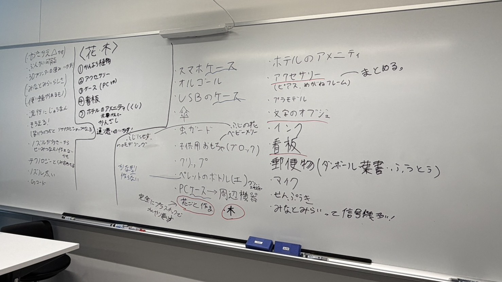
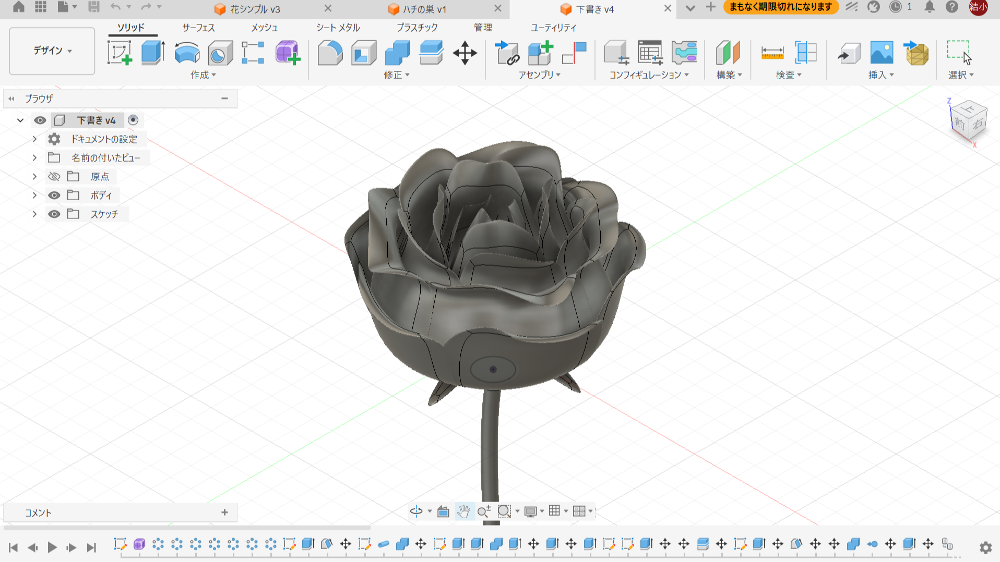
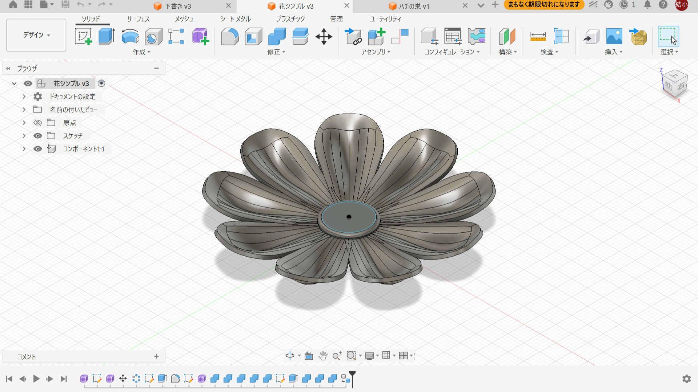
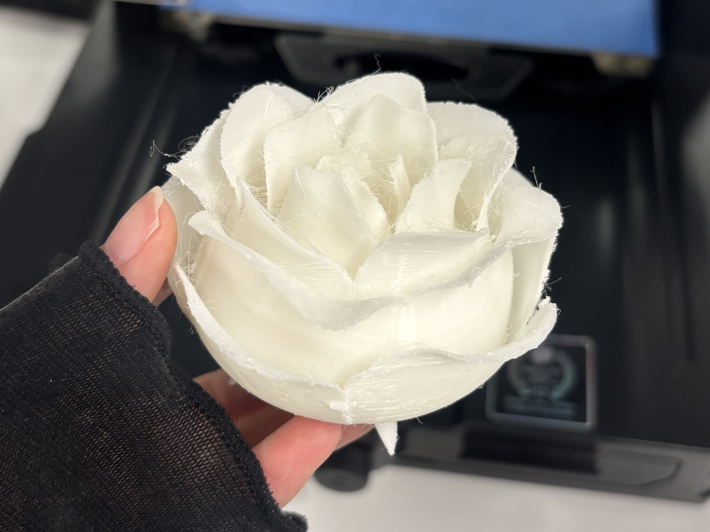
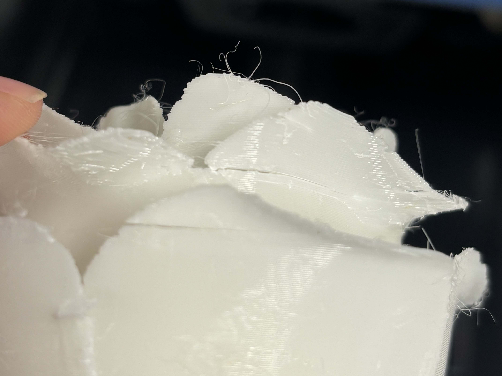
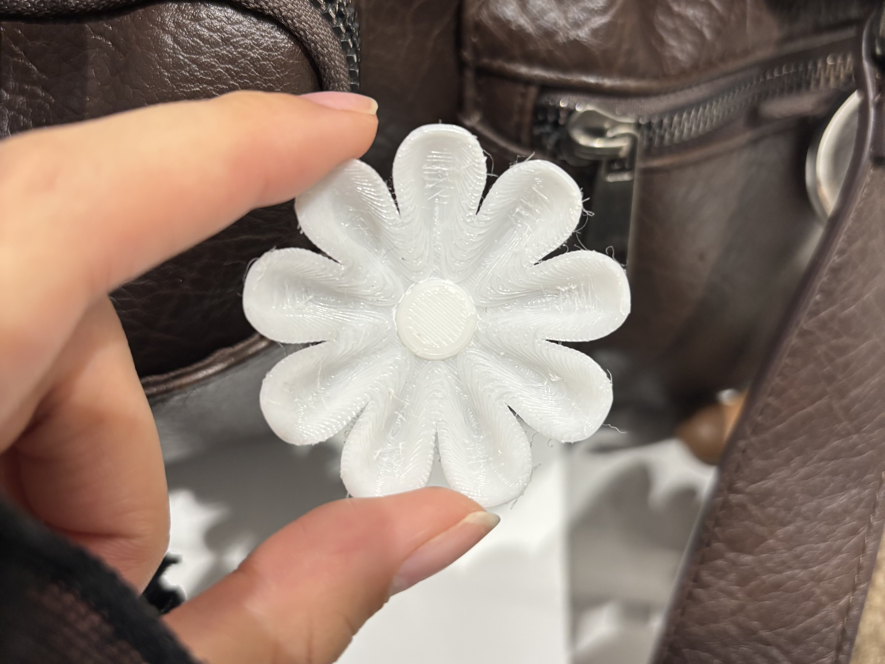

クリアファイル再生プロジェクト
このページでは
ペレット化したクリアファイルを３Dプリンターを利用して新たなものに生まれ変わらせるプロジェクトの記録をまとめます。
テーマ決め・アイデア出し

このような様々なアイデアが提案されました。
特に「植物」「アクセサリー」「PCガジェット」「看板」「アメニティ」について多くの案が出た。
この中から自然や植物をテーマとし、その中で新たなアイデアやペレットの利用価値を示していくという展示に決定。
とりあえずモデリング・印刷してみる
植物のモデリングは初めて行うため、練習もかねて花のモデリングを行った。
バラの曲線を表現したいため、fusionのフォームの機能を使用。


サポートを取るのに苦戦しましたが、きれいに印刷できました。花びらが一部割れてしまった。
バラの茎はプリンターから外す衝撃で折れてしまったので、もう少し太くする必要がある。



ペレットを使って何をつくるか
いくつかアイデア出しをしてみました。「椅子」「スピーカー」
この中でスピーカーを作ることに決定しました。
つづき
プロジェクトノート「スピーカー１」